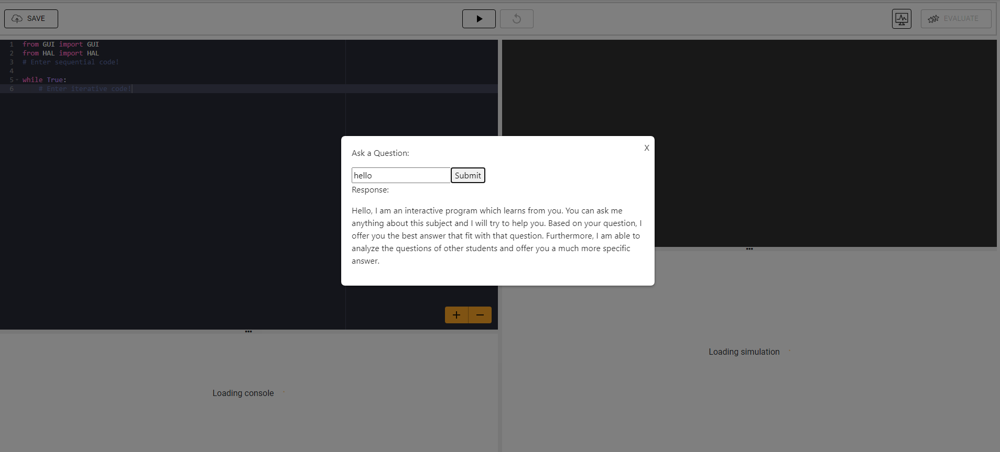
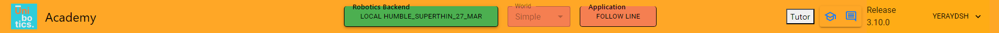

Week 10 (April 8th - April 12th)
In this tenth week, I began refining the visual appearance of the integrated tutor on the Unibotics webpage. Now, when you click the tutor button,
an external window pops up within the page, allowing it to be detached from the top bar, where you can input a question and receive a response.

Additionally, I added a new section of requirements to the README of the intelligent tutor, specifying the necessary modules and their versions for proper functionality
to avoid module compatibility issues.
Furthermore, I relocated the tutor button to a more integrated position on the page and recorded a video showcasing the progress I've made, which I then published on the Unibotics Slack channel.

Throughout the week, I reorganized the tutor scripts to separate them from the unibotics-webserver, resulting in a structure where the unibotics-tutor folder
and the unibotics-webserver folder reside in the same directory.
Lastly, I spent the week attempting to create a protocol for utilizing a question and answer bank based on the exercise the user is working on.
Unfortunately, I was unable to find the key to success and did not complete this task successfully. As with each week, I concluded by updating the blog with a new entry detailing the week's progress.